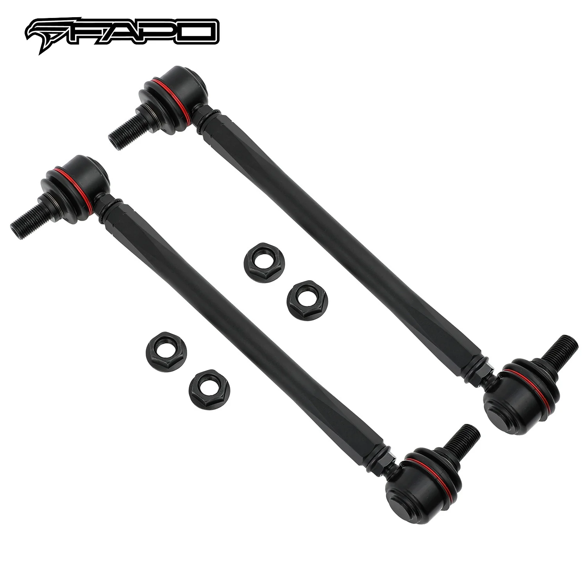

1 / 8Front Stabilizer łącznik stabilizatoras Do Honda CRV CR-V RE 07-11
Nazwa produktu: Łączniki końcowe stabilizatora przedniego FAPO dla Honda CRV CR-V RE 2007-2011 Stan: schorzenie: Zupełnie nowy w pudełku Zastosowanie: Honda CRV CR-V RE 2007-2011 Można ich używać jako uniwersalnych ogniw końcowych, jeśli wymiary odpowiadają wymaganym specyfikacjom. Zwykle stosowany w obniżonych samochodach, w których łączniki końcowe OEM są zbyt długie, aby je zainstalować. Cechy produktu: Wykonane…
Product Name: FAPO Front Stabilizer Sway Bar End Links For Honda CRV CR-V RE 2007-2011 Condition: Brand New in Box Application: Honda CRV CR-V RE 2007-2011 Can be used as universal end links if measurement matches the specs required. Usually used for lowered cars where the OEM end links are too long to install. Features: Constructed of High-Strength Steel Alloy Forged ball joint with CNC precision machining Powdercoating process with long-time rust protection All bolts and nuts included for installation Overall length (Shortest–Longest): 255 mm–295 mm (bolt to bolt) Ball Joint Stud Size: 12 mm Allows adjustment on/off the car 1-year warranty for any manufacturing defect
699,99 PLN
Opis produktu
Nazwa produktu:
Łączniki końcowe stabilizatora przedniego FAPO dla Honda CRV CR-V RE 2007-2011
Stan: schorzenie:
Zupełnie nowy w pudełku
Zastosowanie:
- Honda CRV CR-V RE 2007-2011
Można ich używać jako uniwersalnych ogniw końcowych, jeśli wymiary odpowiadają wymaganym specyfikacjom. Zwykle stosowany w obniżonych samochodach, w których łączniki końcowe OEM są zbyt długie, aby je zainstalować.
Cechy produktu:
- Wykonane ze stopu stali o wysokiej wytrzymałości
- Kuty przegub kulowy z precyzyjną obróbką CNC
- Proces malowania proszkowego z długotrwałą ochroną przed rdzą
- W zestawie wszystkie śruby i nakrętki potrzebne do montażu
- Długość całkowita (najkrótsza – najdłuższa): 255 mm – 295 mm (śruba do śruby)
- Rozmiar sworznia przegubu kulowego: 12 mm
- Umożliwia regulację włączania/wyłączania samochodu
- 1 rok gwarancji na wszelkie wady produkcyjne
Product Name:
FAPO Front Stabilizer Sway Bar End Links For Honda CRV CR-V RE 2007-2011
Condition:
Brand New in Box
Application:
- Honda CRV CR-V RE 2007-2011
Can be used as universal end links if measurement matches the specs required. Usually used for lowered cars where the OEM end links are too long to install.
Features:
- Constructed of High-Strength Steel Alloy
- Forged ball joint with CNC precision machining
- Powdercoating process with long-time rust protection
- All bolts and nuts included for installation
- Overall length (Shortest–Longest): 255 mm–295 mm (bolt to bolt)
- Ball Joint Stud Size: 12 mm
- Allows adjustment on/off the car
- 1-year warranty for any manufacturing defect
FAPO Polska
Ten produkt obsługujemy lokalnie
Autoryzowana obsługa
FAPO Polska prowadzi katalog, kontakt i zamówienia bez odsyłania klienta do zewnętrznych sklepów.
Dobór po aucie
Sprawdzamy dopasowanie produktu do pojazdu, rocznika i wersji przed finalizacją zamówienia.
Wsparcie po zakupie
Masz kontakt w Polsce w sprawach zamówień, wysyłki, gwarancji i zwrotów.